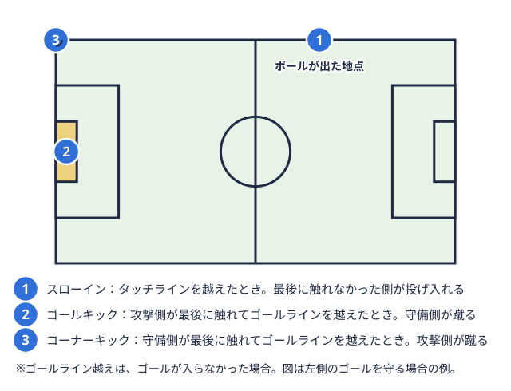

部員向け 2026-11-13
大学サッカー部の練習メニューの組み立て方｜1日の構成と試合日から逆算する1週間
「来週の練習メニューを任された」「学生コーチになって、何から組めばいいかわからない」。大学サッカー部では、監督やコーチが全体の方針を決める一方で、日々のメニューの細部は学生スタッフや幹部が組み立てる場面もあります。メニュー表を検索しても、小中学生向けの内容が多く、大学生の環境にそのまま当てはめにくいと感じる人もいるかもしれません。
この記事では、特定のメニューを「これが正解」と紹介するのではなく、メニューを組み立てる枠組みを整理します。具体的には、(1)日本サッカー協会（JFA）が公開している練習の6要素と時間配分、(2)試合日から逆算した1週間の考え方、(3)当サイトの試合データから見た公式戦の間隔、(4)ウォームアップと暑熱対策の公的情報、の順に見ていきます。
なお、JFAの練習構成の資料は中学校の部活動向けに作られたものです。大学生向けに公開された同種の標準メニューは、今回の調査では確認できませんでした。そのため本記事では、中学校向け資料を「構成の型」として借り、大学生に当てはめる際に何を調整すべきかを考える立場で書いています。
まず押さえたい練習の6要素と時間配分の目安
JFAの指導の手引きにある「6項目」
JFAは「中学校部活動サッカー指導の手引き」の中で、1回の練習を次の6項目で構成する例を示しています（JFA 中学校部活動サッカー指導の手引き）。
| 順 | 項目 | 時間の目安 |
|---|---|---|
| 1 | ウォーミングアップ | 約15分 |
| 2 | 個人技能（ドリル） | 2〜4の合計で約45分 |
| 3 | シュート | （上記に含む） |
| 4 | グループ技能（ボールを運ぶ・奪う） | （上記に含む） |
| 5 | ゲーム | 約30分 |
| 6 | クーリングダウン | 約10分 |
また、1回の練習はウォーミングアップからクールダウンまで2時間以内に収めるよう計画することが示されています。同じ資料では、練習に「サッカーの要素を常に取り入れること」、そして同じ動きを繰り返せるように組むことも、指導上の留意点として挙げられています。
大学生に当てはめるときの考え方
この時間配分は中学生向けの例なので、そのまま大学のトップチームに使えるとは限りません。ただ、「準備→技術→シュートや連係→ゲーム→整理」という流れの型は、学年やカテゴリーが変わっても考え方として参考にしやすい部分です。
当てはめるときは、次の3点を自チームの事情に合わせて調整するとよいでしょう。
- 時間の枠：授業の合間に使えるグラウンド時間が1時間半なのか、朝練で2時間なのか。枠が短ければ、ゲームやシュートの比率を決めたうえで他を削る
- 人数と設備：人数が少ない日は大人数のゲーム形式ができないため、少人数で目的を再現できる形（例：ポゼッションの人数を減らす）に置き換える
- カテゴリー：トップチームとセカンド以下で、同じ日の目的を分ける。出場機会が少ない選手が練習の中で試合に近い強度を経験できるかも、設計の観点になる
試合日から逆算して1週間を組む
JFAが示す「試合1日・練習4日・休養2日」の配置
同じ手引きでは、1週間を「1日の試合、4日のトレーニング、2日のリカバリー・休息」で構成する例が示されています。週末に試合が2日入る場合は、他の日で調整するとも書かれています。中学生を想定した配置ですが、「休養の日を最初から枠として確保する」という考え方は、大学の部活でも検討しやすい点です。
週間計画は「その週の試合の入り方」から決める
メニューを日ごとに考える前に、その週に公式戦や練習試合がいつ入っているかを先に確認します。試合日が決まると、次のような順で逆算しやすくなります。
- 試合日と、前後の休養日を先に置く
- 試合の2〜3日前までに、強度の高いゲーム形式や対人の練習を入れるかどうかを決める
- 試合の前日は、疲労を残さない内容に寄せるかどうかを、監督・コーチと相談して決める
- 試合後の日は、出場した選手と出場していない選手で内容を分ける
ここでの「2〜3日前」「前日」といった具体的な日数は、一般的な考え方の例であり、すべてのチームに共通する基準ではありません。チームの方針、選手の状態、その週の試合数によって変わります。
公開されている大学サッカー部の予定表の一例
実際の大学サッカー部の週間の動きは、公式サイトの予定表から読み取れる場合があります。たとえば京都産業大学サッカー部は、公式サイトでAチームの月間予定を公開しています（京都産業大学サッカー部 Aチームスケジュール）。2026年11月分（2026年11月1日更新）を確認したところ、次のような記載がありました。
- 練習（TR）は神山グラウンドで行われる日が多く、開始時刻は7:00の日が最も多い
- 水曜は12:30開始の日が続いている
- 公式戦は別会場で行われる日に、試合の開始時刻だけが記載されている
- 休養日（off）が月・火曜を中心に設定されている
これは1つの大学の1か月分に過ぎず、他の大学にそのまま当てはまるわけではありません。ただ、(a)練習の時間帯が曜日で変わる、(b)休養日が予定表に最初から組み込まれている、(c)公式戦の日は練習が入らない、といった点は、自チームの週間計画を考えるときの参考材料になります。
公式戦の間隔から見る「メニューの重さ」の調整
当サイトのデータで見る、各チームの試合の間隔
試合と試合の間が何日空くかによって、練習で積める内容は変わります。当サイトの試合データ（日付が登録されている試合）から、同じチームの連続する2試合の間隔を集計すると、次のようになりました（2026年11月13日時点、各リーグ戦参加チームが一定の期間にわたって何試合も戦い、成績の合計で順位を決める大会の形式。用語辞典で見るのみ。天皇杯予選や練習試合は含みません）。
| リーグ | 集計した試合間隔の数 | 3日以内 | 4〜7日 | 8〜14日 | 15日以上 | 中央値 |
|---|---|---|---|---|---|---|
| 関東大学サッカーリーグ1部 | 228 | 44 | 156 | 16 | 12 | 7日 |
| 関西学生サッカーリーグ1部 | 252 | 36 | 146 | 46 | 24 | 7日 |
| 北信越大学サッカーリーグ1部 | 104 | 0 | 82 | 6 | 16 | 7日 |
ここから読み取れることは次のとおりです。
- どのリーグでも間隔の中央値は7日で、「週末に試合、次の週末にまた試合」というリズムが基本になっている
- 関東1部と関西1部には、間隔が3日という連戦に近い組み合わせが含まれる（関東1部では集計した228のうち44、関西1部では252のうち36）。北信越1部には3日以内の間隔は含まれていない
- 15日以上空く間隔もあり、関東1部と北信越1部では100日を超えるものもある。これは主に、前期と後期の間の長い空白期間にあたると考えられる（当サイトのデータ上の観察であり、日程の事情までは確認していない）
つまり、同じ「1部」でも、連戦の週と、試合が空く時期では、練習の位置づけが変わる可能性があります。連戦の週は回復と最低限の確認を中心に、試合が空く時期は個人の課題やチーム戦術の積み上げに時間を割く、といった切り替えが考えられます。
自チームの日程を確認する方法
自分のリーグの試合間隔は、日程ページで確認できます。
リーグの仕組みや入替戦リーグの境目にいる上と下のチームが、翌年にどちらの階層で戦うかをかけて行う試合。 用語辞典で見るの有無については、関東大学サッカーリーグの仕組みや大学サッカーのリーグ種類（全国9地区）にまとめています。残り試合数によって練習の優先順位が変わるため、順位表とあわせて見ておくと、その週のテーマを決めやすくなります。
用語辞典で見るの有無については、関東大学サッカーリーグの仕組みや大学サッカーのリーグ種類（全国9地区）にまとめています。残り試合数によって練習の優先順位が変わるため、順位表とあわせて見ておくと、その週のテーマを決めやすくなります。
ウォーミングアップで使えるFIFA 11+
構成と所要時間
ウォーミングアップの内容を考えるとき、公的な情報として参照しやすいのが、FIFAが考案したケガ予防プログラム「FIFA 11+」です。スポーツ安全協会のページによると、次の3パートで構成され、特別な道具を使わず約20分で実施できるとされています（スポーツ安全協会 サッカーにおける外傷・障害の予防プログラム）。
| パート | 内容 | 時間の目安 |
|---|---|---|
| Part 1 | ランニングエクササイズ | 8分 |
| Part 2 | 筋力・プライオメトリクス・バランス | 10分 |
| Part 3 | ランニングエクササイズ | 2分 |
同ページでは、週2回以上、練習前のウォーミングアップとして行うことが推奨されています。JFAのメディカルページも、FIFAが「11+」を考案し、その効果を検証していることに触れています（JFA メディカル）。
JFAメディカル委員会のコラムにある「小さな部位から大きな動きへ」
JFAスポーツ医学委員会のコラムでは、ケガを予防するウォームアップとして、体幹、肩甲帯、足趾・足部・足関節、下肢、立位、動きながら、ジョギングの順に、関節の小さな部分から広い範囲の動きへ進める流れが紹介されています（JFA メディカル通信 第9回、2011年掲載）。コラムでは、片脚で体を支える能力の重要性や、体幹の安定が下肢の協調した動きにつながることが説明されています。
メニュー作成者として押さえておきたいのは、次の点です。
- ウォーミングアップは「体を温める」だけでなく、ケガを減らすための時間としても設計できる
- 時間が足りないときに最初に削られがちだが、6要素の中でも優先して残すかどうかをチームで話し合う価値がある
- 11+を取り入れる場合も、公式戦前の日と通常練習の日で、チームの方針に合わせて調整する
なお、ケガの種類ごとの予防やストレッチの考え方は、大学サッカー部のストレッチとケガ予防や、前十字靭帯の予防トレーニングで詳しく扱っています。
暑い時期・寒い時期のメニュー調整
暑熱対策は練習でも対象になる
JFAは「熱中症対策ガイドライン」を公表しており、メディカルのページでは、試合だけでなく日常のトレーニングでも対策と予防を行うよう求めています（JFA 暑熱対策・水分補給）。同ページでは、のどが渇いていなくてもこまめに水分補給を心がけることが呼びかけられています。
具体的なWBGT（暑さ指数）ごとの運動の目安は、日本スポーツ協会の「熱中症予防運動指針」で確認できます（日本スポーツ協会 熱中症予防）。夏の練習メニューを組むときは、メニューの内容そのものより先に、その日の暑さ指数を測り、指針に照らして実施の可否や休憩の頻度を決める手順を週間計画に組み込んでおくと安全です。
暑熱対策でメニューに反映できること
指針の数値を確認したうえで、メニュー側でできる調整の例を挙げます。
- 強度の高い対人や走り込みを、気温の低い時間帯に寄せる
- 休憩・給水の時間を、練習の途中にあらかじめ枠として入れておく
- 1本ごとの時間を短くして本数を増やすなど、連続して負荷がかかる時間を短くする
これらは具体的な数値の基準ではなく、一般的な調整の方向性です。実際の運用は、チームのトレーナーやコーチ、大学の保健管理部門の指針に従ってください。
メニュー表を作る手順（学生コーチ・幹部向けの例）
最後に、ここまでの内容を使って、1週間のメニュー表を作る手順の例をまとめます。
- 試合日と休養日を置く：リーグ日程ページと、チームの予定表から、その週の試合日を確認する
- 各日のテーマを1つに絞る：「守備の約束事」「ビルドアップ自陣の後ろの方から、パスをつないで少しずつ前に進み、攻撃を組み立てること。用語辞典で見る」「セットプレープレーが止まったあと、コーナーキックやフリーキックなど、決まった形で再開する場面からの攻撃や守備。

用語辞典で見る」など、1日1テーマに絞る。1日にテーマを詰め込みすぎると、「同じ動きを繰り返す」という手引きの留意点とも合わなくなる - 6要素に時間を割り振る：ウォーミングアップ、個人技能、シュート、グループ技能、ゲーム、クーリングダウンに、その日の枠を割り振る
- ウォーミングアップに11+などを取り入れるか決める：週2回以上という推奨を目安に、取り入れる日を決める
- 暑さ・寒さ・授業の都合を確認する：暑熱対策と、授業・実習・試験期間との調整を反映する
- 練習後に短く振り返る：メニューの内容と、選手の反応・疲労感を簡単に記録し、翌週の計画に生かす
用語の説明が必要なときは、サッカーの戦術用語一覧や当サイトの用語集が参考になります。メニューの作り方を学生コーチの立場から確認したい場合は、学生コーチの役割もあわせてどうぞ。練習の頻度そのものを知りたい場合は、練習量は週何回が目安かで整理しています。
まとめ：メニューの前に「型・日程・安全」を決める
練習メニューは、特定の練習方法を探す前に、(1)1回の練習の型（6要素）、(2)その週の日程（試合日からの逆算）、(3)安全面（ウォーミングアップと暑熱対策）の3つを決めると、組み立てやすくなります。
- JFAの手引きは中学生向けだが、6要素と、休養を最初から枠に入れる考え方は、大学でも検討しやすい
- 当サイトのデータでは、関東1部・関西1部・北信越1部とも試合間隔の中央値は7日で、連戦に近い3日間隔が含まれるリーグもある
- FIFA 11+は約20分、週2回以上が推奨されており、ケガ予防のウォーミングアップとして参考にできる
- 暑さ指数にもとづく運用は、メニューの中身より先に決めておく
自チームの練習は、監督・コーチ、トレーナーの方針が優先されます。この記事の内容は、その方針を実現する週間計画の下書きを作る材料として使ってください。
参考にした情報
- JFA 中学校部活動サッカー指導の手引き
- JFA メディカル（外傷・障害の予防）
- JFA メディカル通信 第9回 けがを予防するためのウォームアップの工夫
- JFA 暑熱対策・水分補給
- スポーツ安全協会 サッカーにおける外傷・障害の予防プログラム
- 日本スポーツ協会 熱中症予防
- 京都産業大学サッカー部 Aチームスケジュール
- 当サイト試合データ（関東・関西・北信越の各1部、2026年11月13日時点）
この部活・競技を応援したい方へ。
取材してほしい部活を募集中
オフシーズン・引退後に、長期インターンという選択
部活で培った力を実務で試す。16タイプ診断（30秒）で合う企業がわかります。